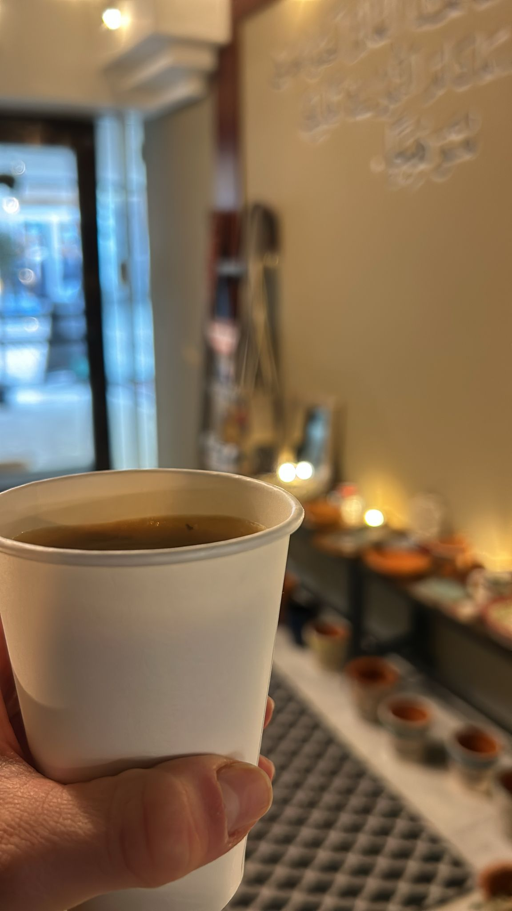
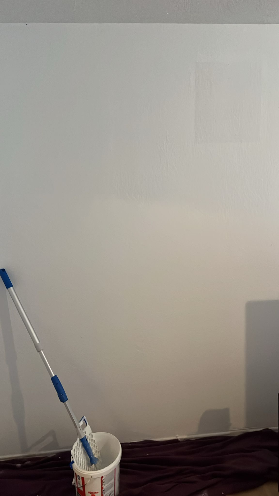

02Feb
Der Morgen danach
Donnerstag wird direkt festgehalten.
„Wie sieht es denn bei dir so in den nächsten Tagen aus :)“
Nicht irgendwann. Nicht „man schreibt sich“. Um 07:32 Uhr fragt Raoul nach dem nächsten Treffen, um 10:23 Uhr steht der Donnerstag.
03Feb
Die wichtigen Fragen
Wegbier, Lasagne und Tansania.
„Das Wegbier macht dich dafür noch viel mehr sympathischer 😍😍“
Das Gespräch springt mühelos von Kindheitsessen zu Reisen, Arbeit und der Idee eines gemeinsamen Kochabends. Genau darin liegt eure frühe Dynamik.
05Feb
Ein kleiner Tippfehler
„Keine Langeweile“ wird kurz zu „Sorgen“.
„Oh Gott, es sollte ‚keine Sorgen‘ heißen
Merke ich jetzt erst 🥲“
Charleen hatte längst verstanden, wie es gemeint war. Ein unspektakulärer Moment, der zeigt, wie vertraut euer Ton schon vor dem zweiten Date geworden war.
08Feb
Eine Empfehlung wird ausprobiert
Kardamom-Kaffee im Bethlehem Cravings.
„Nee, echt Weil was ganz anderes!😍“
Orte und Empfehlungen werden nicht nur erwähnt. Sie wandern aus dem Chat in den Alltag des anderen.

22Feb
Neo, Finn und ein Abend, der zu kurz war
Aus Treffen wird Beteiligung.
„Ich fand’s auch echt schön mit dir! Hätte gerne noch etwas länger sein dürfen - aber da bin ich ja selbst schuld 🙉“
Am nächsten Morgen bietet Charleen Hilfe in der neuen Wohnung an. Kurz darauf stehen Blaue Lagune, Tapas und IKEA auf einer gemeinsamen Liste.
02Mär
Beide krank, trotzdem Farbe an der Wand
Der Flur vor dem Kumpel-Kaffee.
„Ich hab echt gerne geholfen, auch wenn ich gerne länger und mehr geschafft hätte 😅“
Charleen war an dieser Wohnung beteiligt, bevor ihr wusstet, welche Rolle sie später einmal spielen würde.
